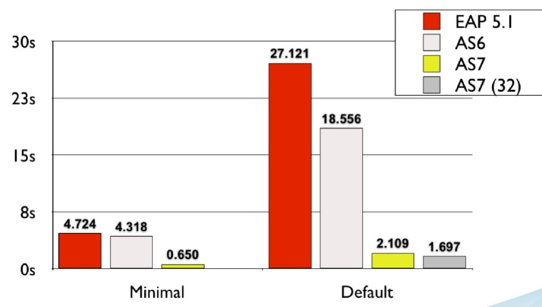
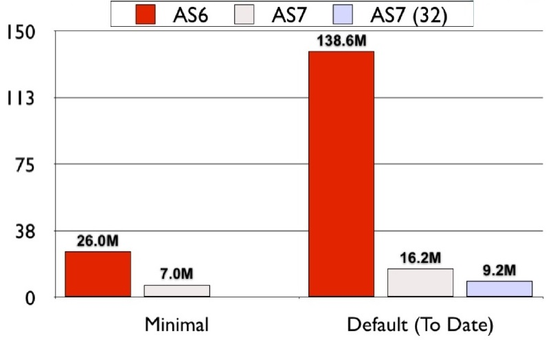
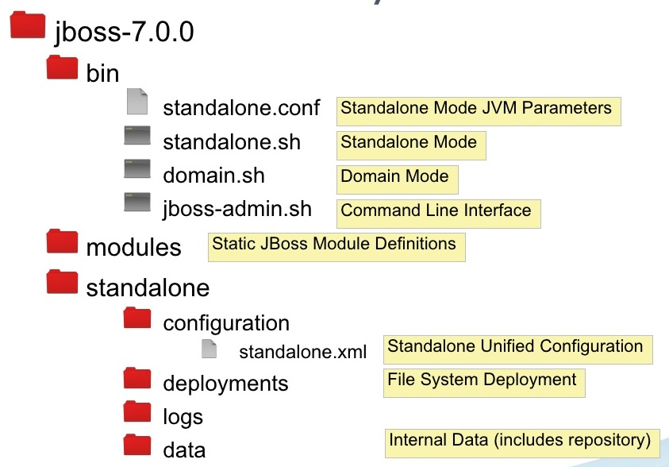
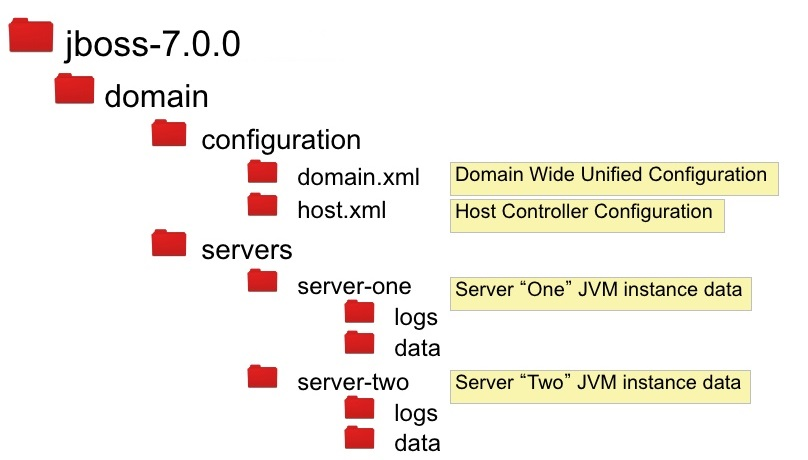
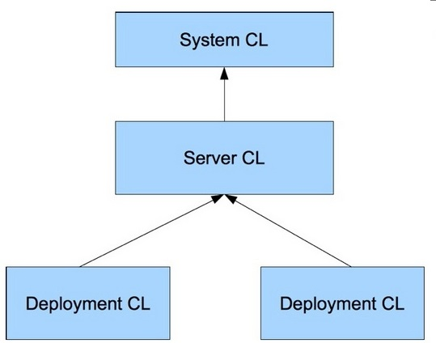
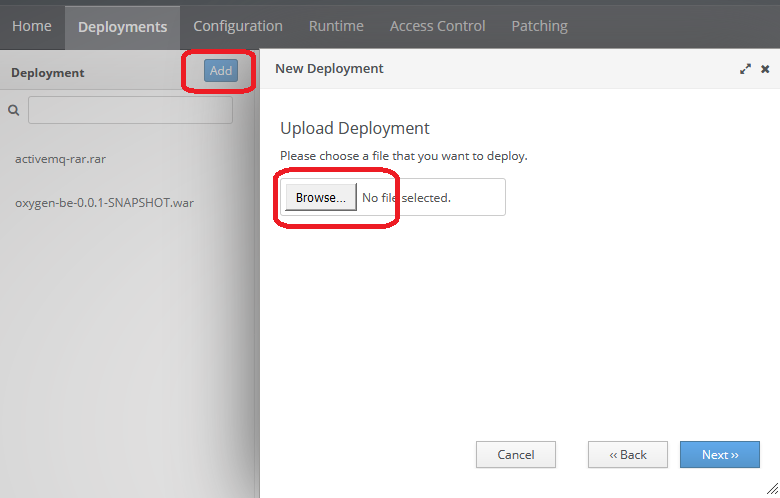

## JBoss EAP 7.1 #### Concept & Usage Created by [Arnošt Havelka](http://cz.linkedin.com/in/arnosthavelka/)
## Agenda 1. Overview 1. Architecture 1. Deployment methods 1. Deployment descriptors 1. Configuration <p><small>See: presentation <a href="https://www.slideshare.net/rayploski/jboss-application-server-7">JBoss 7</a></small></p>
## 1. Overview 1. JBoss EAP 7.1 1. History 1. Standards 1. Components 1. Performance 1. CLI Interface
## 1.1 JBoss EAP 7.1 Red Hat JBoss Enterprise Application Platform 7.1 (JBoss EAP) is a middleware platform built on open standards and compliant with the JavaEE 7 specification.
1.2 History
## 1.3 Standards | Specification | JBoss EAP 6 | JBoss EAP 7.1 | | ------------- | ------------- | ------------- | | Java SE | 8.0 | 8.0 | | Java EE | 6.0 | 7.0 | | Java Servlet | 3.0 | 3.1 | | JMS | 1.1 | 2.0 | | JTA | 1.1 | 1.2 | | JPA | 2.0 | 2.1 | <p><small>See: <a href="https://access.redhat.com/articles/113373">JBoss Standards</a></small></p>
## 1.4 Components | Component |Version | | ------------- | ------------- | | Wildfly Core | 3.0.10 | | Undertow | 1.4.18 | | Hibernate Core | 5.1.10 | | JBoss Transactions (Narayana) | 5.5.30 | | ActiveMQ Artemis | 1.5.5.008| | JBoss Logging | 3.3.1 | <p><small>See: <a href="https://access.redhat.com/articles/112673">JBoss Enterprise Application Platform Component Details</a></small></p>
## 1.5 Tested Frameworks | Component |Version | | ------------- | ------------- | | Spring (Core) | 4.3.10 | | Spring Security | 4.2.3 | | AngularJS | 1.5.8 | | JQuery | 2.0.3 & 2.1.4 | <p><small>See: <a href="https://access.redhat.com/articles/2026253">Red Hat JBoss Enterprise Application Platform (EAP) 7 Supported Configurations</a></small></p>
1.5 Perf - Boot Time

1.5 Perf - Memory Usage

## 1.6 CLI Interface The management console and management command-line interface (CLI) make editing XML configuration files unnecessary and add the ability to script and automate tasks.
## 2. Architecture 1. Operating Modes 1. Domain model 1. File layout 1. Class loading 1. Modules 1. Architecture
## 2.1 Operating Modes 1. **Standalone** - single JVM - Managed from JVM server itself 1. **Domain** - multiple JVMs - Managed from Domain Controller (single point) - Three separate processes: - **Domain Controller** (starting servers) - **Host Controller** (pushing out the configuration changes over the domain) - **Server Instance** (JVM) <p><small>See:<a href="https://docs.jboss.org/author/display/AS71/Operating+modes">Operating modes</a></small></p>
2.2 Domain model
2.3 File layout - Standalone

2.3 File layout - Domain

2.4 Class Loading

## 2.5 Modules - concept [1/2] The JBoss modules are used for modular class loader (with necessary dependencies) separating all Java classes into the logical grouping. 1. **System** - delivered by JBoss and stored under the folder `<JBOSS_HOME>\modules\system` 1. **Custom** - added by developers (to enhance AS) and can be stored under the folder `<JBOSS_HOME>\modules` <p><small>See:<a href="https://access.redhat.com/documentation/en-us/jboss_enterprise_application_platform/6/html/development_guide/chap-class_loading_and_modules">Class Loading and Modules</a></small></p>
## 2.5 Modules - usage [2/2] The default version: ``` <module xmlns="urn:jboss:module:1.5" name="org.hibernate"> <resources> <resource-root path="hibernate-core-5.1.10.Final-redhat-1.jar"/> ... </resources> <dependencies> <module name="org.hibernate.commons-annotations"/> ... </dependencies> <module/> ``` The specific version: ``` <module xmlns="urn:jboss:module:1.5" name="org.hibernate" slot="4.3"> ... <module/> ```
2.6 Architecture [1/2]
2.6 Architecture [1/2]
## 3. Deployment methods 1. Hotdeploy 1. JBoss Console 1. JBoss CLI 1. Maven plugin 1. standalone.xml 1. IDE support
## 3.1 Hotdeploy Simply put the deployable artifact (WAR/EAR) to this folder (for the standalone mode): __`<JBOSS_HOME>`\standalone\deployments__
3.2 JBoss Console

## 3.3 JBoss CLI Run in folder `<JBOSS_HOME>`\bin: ``` jboss-cli.bat --connect --controller=localhost:9990 --user=<USERNAME> --password=<PASSWD> "ls deployment" ``` Result: ``` activemq-rar.rar oxygen-be-0.0.1-SNAPSHOT.war Press any key to continue . . . ``` <p><small>See: <a href="http://middlewaremagic.com/jboss/?p=419">Connect command</a></small></p>
### 3.4 Maven plugin [1/3] Definition in pom.xml: ``` <plugin> <groupId>org.wildfly.plugins</groupId> <artifactId>wildfly-maven-plugin</artifactId> <version>1.2.1.Final</version> <configuration> <id>wildfly-local</id> <hostname>127.0.0.1</hostname> <port>9990</port> </configuration> </plugin> ```
### 3.4 Maven plugin [2/3] Definition in settings.xml: ``` <servers> <server> <id>wildfly-local</id> <username>jboss</username> <password>{1+FOuT1SvgsHdMP0cDidfesvY7jIcGKxiy5YyaQEpZ4=}</password> </server> </servers> ```
### 3.4 Maven plugin Goals: * **wildfly:deploy** - deploy the application * **wildfly:undeploy** - undeploy the application * **wildfly:run** - runs AS and deploys the application * **wildfly:start** - starts AS Usage: <p><small>http://localhost:8080/oxygen-be/info</small></p> <p><small>See: <a href="https://docs.jboss.org/wildfly/plugins/maven/latest/plugin-info.html#">Plugin goals</a></small></p>
### 3.5 standalone.xml ``` <deployment name="oxygen-be-0.0.1-SNAPSHOT.war" runtime-name="oxygen-be-0.0.1-SNAPSHOT.war"> <content sha1="87071b1ac954ac9ccbf8833548ea10e1ab36df46"/> </deployment> ```
### 3.6 IDE support 1. **Eclipse** - `Servers` view and installed JBoss Tools Plugin 1. **Idea** - add server from `Settings > Build, Executions, Deployment -> Application Servers`
## 4. Deployment descriptors 1. jboss-web.xml 1. jboss-deployment-structure.xml
### 4.1 jboss-web.xml ``` <?xml version="1.0" encoding="UTF-8"?> <jboss-web> <context-root>/oxygen-be</context-root> </jboss-web> ``` <p><small>See: article <a href="https://developer.jboss.org/wiki/HowDoIOverrideTheWebContextRoot">How do I override the web context root?</a> or project <a href="https://github.deutsche-boerse.de/dev/cs.oxygen">cs.oxygen</a></small></p>
### 4.2 jboss-deployment-structure.xml ``` <jboss-deployment-structure xmlns="urn:jboss:deployment-structure:1.2"> <deployment> <dependencies> <module name="org.slf4j" export="true"/> <module name="org.hibernate" export="true"/> <module name="org.hibernate.validator" export="true"/> <module name="deployment.activemq-rar.rar" export="true"> <imports> <include path="org/apache/activemq/**" /> <exclude path="**" /> </imports> </module> </dependencies> </deployment> </jboss-deployment-structure> ```
## 5. Configuration 1. Set the environment property 1. Binding JNDI value 1. Deploy Oracle driver 1. Create new datasource 1. Logging 1. Securing Passwords
### 5.1 Set the environment property Add element `system-properties` to `standalone.xml`: ``` <system-properties> <property name="com.clearstream.amq.amqjmsra.jndi.config" value="<JBOSS_HOME>/standalone/configuration/amqjmsra-jndi-config.properties"/> <property name="config.file" value="<WORKSPACE>/application.properties"/> </system-properties> ```
### 5.2 Binding JNDI value Binding JNDI value in `standalone.xml`: ``` <subsystem xmlns="urn:jboss:domain:naming:2.0"> <bindings> <simple name="java:global/url/Configuration" value="file:///data/config/wildfly-services-1.0" type="java.net.URL"/> </bindings> </subsystem> ``` Java usage: ``` @Resource(lookup="java:global/url/Configuration") private URL configuration; ```
### 5.3 Deploy Oracle driver Add Oracle driver with CLI as: ``` <JBOSS_HOME>\bin\jboss-cli.bat module add --name=com.oracle.jdbc \ --resources=<PATH_TO_JAR>/ojdbc7-12.1.0.2-cbl-2.jar \ --dependencies=javax.api,javax.resource.api,javax.transaction.api,asm.asm ``` Register Oracle driver with CLI as: ``` <JBOSS_HOME>\bin\jboss-cli.bat /subsystem=datasources/jdbc-driver=oracle:add( \ driver-name=oracle, driver-module-name=com.oracle.jdbc, \ driver-xa-datasource-class-name=oracle.jdbc.xa.client.OracleXADataSource, \ driver-class-name=oracle.jdbc.driver.OracleDriver \ ) ```
### 5.4 Create new datasource [1/2] Use CLI as: ``` <JBOSS_HOME>\bin\jboss-cli.bat connect cd /subsystem=datasources/jdbc-driver xa-data-source add --name=XA-OxygenDS \ --jndi-name=java:/XAOxygenDS \ --user-name=<USERNAME> --password=<PASSWORD> \ --driver-name=oracle \ --xa-datasource-class=oracle.jdbc.xa.client.OracleXADataSource \ --xa-datasource-properties={"URL"=>"jdbc:oracle:thin:@gundrak:1919:TNP4_GUN"} ```
### 5.4 Create new datasource [2/2] Add content directly to `standalone.xml`: ``` <subsystem xmlns="urn:jboss:domain:datasources:5.0"> <datasources> <xa-datasource jndi-name="java:/XA-OxygenDS" pool-name="XAOxygenDS" enabled="true" use-ccm="false"> <xa-datasource-property name="URL">jdbc:oracle:thin:@gundrak:1919:TNP4_GUN</xa-datasource-property> <driver>oracle</driver> <xa-pool> <is-same-rm-override>false</is-same-rm-override> <no-tx-separate-pools>true</no-tx-separate-pools> </xa-pool> <security> <user-name>xyz</user-name> <password>xyz</password> </security> </xa-datasource> <drivers> <driver name="oracle" module="com.oracle.jdbc">...</driver> </drivers> </datasources> </subsystem> ```
### 5.5 Logging Add content directly to `standalone.xml`: ``` <subsystem xmlns="urn:jboss:domain:logging:3.0"> <console-handler name="CONSOLE">...</console-handler> <periodic-rotating-file-handler name="FILE" ...>...</periodic-rotating-file-handler> ... <logger category="com.clearstream.oxygen"> <level name="DEBUG"/> </logger> ... </subsystem> ```
### 5.6 Securing Passwords [1/2] Steps: 1. Create a Java KeyStore 1. Use the Vault Tool scripts to store a password in the vault 1. Configure the attributes in `standalone.xml` <p><small>See: <a href="https://developer.jboss.org/wiki/HowDoIOverrideTheWebContextRoot">JBoss AS7 Securing Passwords</a></p>
### 5.6 Securing Passwords [2/2] Parts in `standalone.xml`: ``` <vault> <vault-option name="KEYSTORE_URL" value="/home/anil/vault/vault.keystore"/> <vault-option name="KEYSTORE_PASSWORD" value="MASK-3y28rCZlcKR"/> ... </vault> ... <subsystem xmlns="urn:jboss:domain:datasources:1.0"> <datasources> <datasource jndi-name="java:jboss/datasources/ExampleDS" enabled="true" use-java-context="true" pool-name="H2DS"> ... <security> <user-name>sa</user-name> <password>${VAULT::ds_ExampleDS::password::N2NhZDYzOTMtNWE0OS00ZGQ0LWE4MmEtMWNlMDMyNDdmNmI2TElORV9CUkVBS3ZhdWx0}</password> </security> </datasource> ... </datasources> </subsystem> ```
THE END
Thank you!